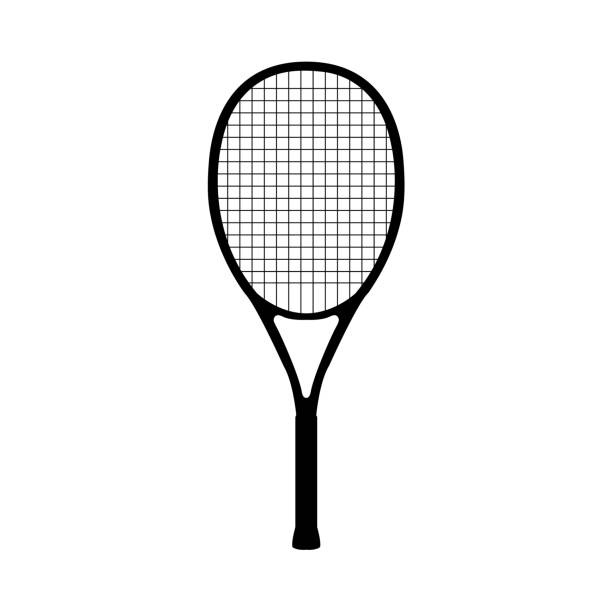

A ball is a round object (usually spherical, but can sometimes be ovoid)[1] with several uses.
It is used in ball games, where the play of the game follows the state of the ball as it is hit,
kicked or thrown by players. Balls can also be used for simpler activities, such as catch or juggling.
Balls made from hard-wearing materials are used in engineering applications to provide very low friction bearings,
known as ball bearings. Black-powder weapons use stone and metal balls as projectiles.
Although many types of balls are today made from rubber, this form was unknown outside the Americas until
after the voyages of Columbus. The Spanish were the first Europeans to see the bouncing rubber balls (although
solid and not inflated) which were employed most notably in the Mesoamerican ballgame. Balls used in various
sports in other parts of the world prior to Columbus were made from other materials such as animal bladders or skins,
stuffed with various materials.
The word ski comes from the Old Norse word skíð which means "cleft wood",[1] "stick of wood"
or "ski".[2] In Old Norse common phrases describing skiing were fara á skíðum (to travel, move
fast on skis), renna (to move swiftly) and skríða á skíðum (to stride on skis).[3] In Norwegian
this word is usually pronounced [ˈʂiː]. In Swedish, another language evolved from Old Norse, the
word is skidor (plural, pronounced [ˈɧîːdʊr]; singular: skida). The modern Norwegian word ski and
the Swedish word skid have largely retained the Old Norse meaning in words for split firewood, wood
building materials (such as bargeboards) and roundpole fence.[4][5][6][7]
English and French use the original Norwegian spelling ski, and modify the pronunciation.
sci [ˈʃi]. Portuguese and Spanish adapt the word to their linguistic rules: esqui and esquí.
In German, spellings Ski and Schi are in use, both pronounced [ˈʃiː]. In Dutch, the word is ski
and the pronunciation was originally [ˈɕiː] as in Norwegian, but since approximately the 1960s
changed to [ˈskiː]. In Welsh the word is spelled sgi.[1] Many languages make a verb form out of
the noun, such as to ski in English, skier in French, esquiar in Spanish and Portuguese, sciare
in Italian, skiën in Dutch, or Schi laufen or Schi fahren (as above also Ski laufen or Ski fahren)
in German.[9][10] Norwegian and Swedish do not form a verb from the noun.[6]

The word ski comes from the Old Norse word skíð which means "cleft wood",[1] "stick of wood"
or "ski".[2] In Old Norse common phrases describing skiing were fara á skíðum (to travel, move
The word ski comes from the Old Norse word skíð which means "cleft wood",[1] "stick of wood"
or "ski".[2] In Old Norse common phrases describing skiing were fara á skíðum (to travel, move
fast on skis), renna (to move swiftly) and skríða á skíðum (to stride on skis).[3] In Norwegian
this word is usually pronounced [ˈʂiː]. In Swedish, another language evolved from Old Norse, the
word is skidor (plural, pronounced [ˈɧîːdʊr]; singular: skida). The modern Norwegian word ski and
the Swedish word skid have largely retained the Old Norse meaning in words for split firewood, wood
building materials (such as bargeboards) and roundpole fence.[4][5][6][7]
English and French use the original Norwegian spelling ski, and modify the pronunciation.
sci [ˈʃi]. Portuguese and Spanish adapt the word to their linguistic rules: esqui and esquí.
In German, spellings Ski and Schi are in use, both pronounced [ˈʃiː]. In Dutch, the word is ski
and the pronunciation was originally [ˈɕiː] as in Norwegian, but since approximately the 1960s
changed to [ˈskiː]. In Welsh the word is spelled sgi.[1] Many languages make a verb form out of
the noun, such as to ski in English, skier in French, esquiar in Spanish and Portuguese, sciare
in Italian, skiën in Dutch, or Schi laufen or Schi fahren (as above also Ski laufen or Ski fahren)
in German.[9][10] Norwegian and Swedish do not form a verb from the noun.[6]